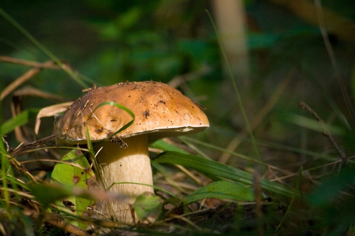

Білий гриб
Найблагородніший з грибів. Зустрічав таких грибників, які казали, що крім білого інших не беруть. Але думаю, що хвалилися. Доречі білим він називається не тому, що має білий колір, а тому, що при термічній обробці лишається світлим, в той час, як більшість інших грибів темнішають.